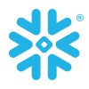

verifiedCertifications & Education
Globally recognised credentials validated through continuous learning.
stars Certifications
-

-

-
-
-
-
-
school Education
engineering
Bachelor of Technology (B.Tech)
Computer Science & Engineering
Brindavan Institute of Technology & Science – Kurnool
auto_stories
Intermediate (XII Class)
A.P. Board of Intermediate Education
Nalanda Junior College – Kurnool
menu_book
SSC (X Class)
A.P. Board of Secondary Education
Zilla Parishad High School – Nannur